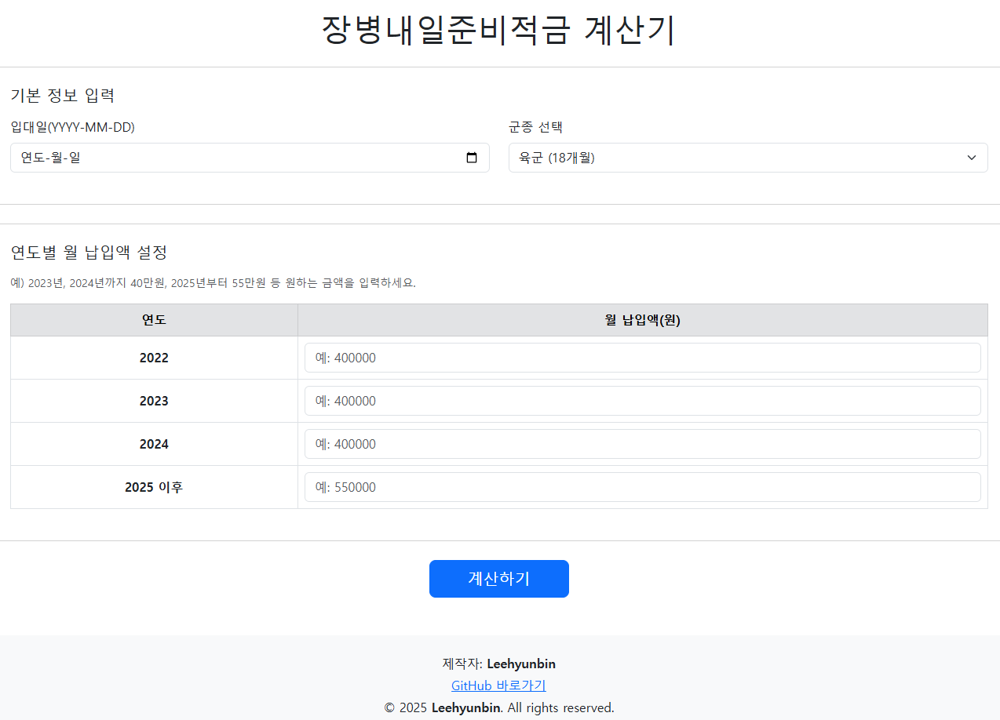

이현빈
도전을 즐기며, 실패를 두려워하지 않습니다. 세상에 가치 없는 도전은 없다고 믿으니까요.
- 학력: 대구대학교 컴퓨터정보공학부(컴퓨터소프트웨어전공) 졸업예정
- 생년월일: 2003.01.31
- 나이: 22
- 경력: 경상공업고등학교 모바일로보틱스 직종 강사 2023.05.15 ~ 2023.09.27
-
대회 경력:
- 2021 전국기능경기대회(National Skills Competition) 동메달
- 2021 대구기능경기대회(Daegu Skills Competition) 금메달
- 2020 대구기능경기대회(Daegu Skills Competition) 은메달
기술 스택
C
Python
OpenCV
ROS
HTML/CSS